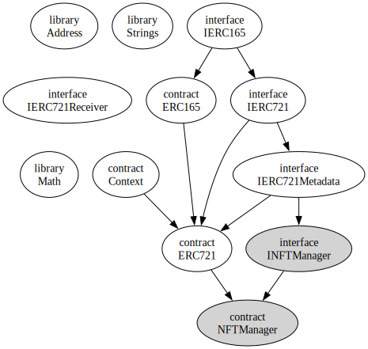

{kind=link}
{kind=link}
{kind=link}
{kind=link}

Go up to the CCC HW page (md) | view tabbed version
In this assignment you are going to develop and deploy two types of tokens on our private Ethereum blockchain. You will develop a token cryptocurrency manager using the ERC-20 token standard, and you will deploy a non-fungible token (NFT) manager using the ERC-721 token standard.
The actual amount of code developed in this assignment is relatively small. The complexity is understanding the code of the existing implementations and extending them.
As you develop the items in this assignment, keep in mind that – on our private Ethereum blockchain – it is possible to track back whose smart contracts are whose.
You will have to have completed the connecting to the private Ethereum blockchain assignment as well as the dApp Introduction assignment. You will also need to be familiar with the lecture slides on Tokens. For some of the tasks below you will need to launch your geth node, connecting to the course server, and start up a geth Javascript terminal; how to do all that is all described in the connecting to the private Ethereum blockchain assignment.
If you have not successfully completed those two assignments, then you will not be able to complete this assignment.
In addition to your source code, you will submit an edited version of tokens.py (src).
Any changes to this page will be put here for easy reference. Typo fixes and minor clarifications are not listed here.
other dictionary in tokens.py (src): 'used_gen_ai_for_cclogo' and 'used_gen_ai_for_nfts'. See the comments therein for details. If you already downloaded the tokens.py file and started editing it, you can just cut-and-paste those two fields into the other dictionary.In this part, you will create a fungible token manager that follows the (enhanced) ERC-20 token standard. This token will represent a token cryptocurrency. You will use this code in future assignments, such as where you will be creating a decentralized cryptocurrency exchange for the cryptocurrency that you are creating here.
You can pick any name that you want. The only restrictions are that you can not use the name of the course cryptocurrency or of an existing cryptocurrency. Feel free to be funny and creative here, but please be appropriate in your selection. Also keep in mind that, in this course, it is possible for somebody to figure out who deployed what cryptocurrency by analyzing the blockchain.
You will need to create both a name and an abbreviation. The name can have spaces in it; only alphanumeric ASCII characters (this means no emojis). Your abbreviation cannot already be taken by another student. To see if an abbreviation has been taken, go to the URL (which is on the Canvas landing page) and try to upload an image with the appropriate name (xyz.png, for example). That site will tell you if that name is already taken – if so, then some other student has claimed that abbreviation. To claim an abbreviation, upload such a named file. You can put a placeholder file there while you work on the logo (below) and then upload a better image later. Please make the file name be all lower case.
Following in the precedent for currently existing cryptocurrencies, abbreviations are at most four characters, typically three, and possibly two. You can have letters and numbers, but not symbols; the first character of the abbreviation must be a letter. The abbreviation when representing the cryptocurrency is always rendered in upper case (i.e., “XYZ”), but the logo file name is all lower case with a “.png” extension (i.e., “xyz.png”).
In this course, we will generally be using the abbreviation “TC” when referring to a generic token cryptocurrency.
You will need to create a logo for your cryptocurrency. The logo that you submit should be 512x512 pixels in size. Use a fun color! Create a neat logo! But please make sure the logo is appropriate. You can look at the types of logos on a site such as coinmarketcap.com for ideas, as well as cryptologos.cc and this github site. You are welcome to use any generative AI tool for this image creation, as long as it fulfills the requirements below.
The logo itself needs to have the following requirements:
xyz.png, where “xyz” is your coin abbreviation.We provide a logo-template.png file as a starter file – it is the correct size and has a transparent background outside the circle. You can use a free program such as GIMP to edit your program.
You will upload your logo to the URL given on the Canvas landing page.
The code we are going to start with is the OpenZeppelin ERC-20 implementation from the the OpenZeppelin github repo. This code was the same as was discussed in class.
The included code is:
msg.sender and msg.data; this is the OpenZeppellin implementationYou can download all of these files via sol-includes.zip; this also includes the includes for the next section.
The only changes made to the OpenZeppelin code above is the paths in the import statements.
You should look over and familiarize yourself with all this code. The inheritance hierarchy of this code is shown below.
Note that the only new files, beyond the the OpenZeppelin implementation, are the two bottom grey nodes. We added was the ITokenCC interface, and you have to implement the TokenCC contract.
You will need to develop the smart contract for your cryptocurrency, and deploy it to our private Ethereum blockchain. Your code will use the files listed above.
There are some very strict submission requirements for this submission so that we can grade it in a sane manner:
TokenCC.sol.contract TokenCC is ITokenCC, ERC20 {; this will inherit the other contracts and interfaces (Context, IERC20, IERC20Metadata, ERC20, and IERC165).pragma solidity ^0.8.24;.import them in TokenCC.sol as such: import "./ITokenCC.sol"; and import "./ERC20.sol"; – those two files import all the other contracts and interfaces. The necessary files will be put into the appropriate directory on Gradescope when it compiles your program.TokenCC.sol file.Your task is to create a TokenCC.sol file with a TokenCC contract. Some implementation notes:
ERC20) constructor that takes two parameters – to see how to do this, look at this lecture slide and the Arguments for Base Constructors section of the Solidity language reference. Defining them via this method means you don’t have to create a name() method nor a name public variable (and likewise for symbol() and symbol), as the ERC20 code will provide that for you.decimals() function:
decimals because of peculiarities of Solidity inheritance; it has to be a function.decimals() function will override a method defined in two ancestors in the inheritance tree – ERC20 and IERC20Metadata. You have to use a form of override that specifies the multiple items being overridden, as shown here._mint() function is internal, it can only be called from code you write. So your constructor should mint for you a reasonable amount of the cryptocurrency.supportsInterface() method to fulfill the requirements of the IERC165.sol (src) contract; remember that your code supports four interfaces: IERC165, IERC20, IERC20Metadata, and ITokenCC. Although your contract also extends Context, there are no external or public methods in Context, and it’s an abstract contract, so there is no interface there to support.requestFunds() function that does nothing other than revert() – we will be using that function in a future assignment, which is why it is in this interface. Since you are just going to call revert(), Solidity will recommend making that a pure function – that’s fine to do in your contract. But the function line in the interface should not have the pure keyword on it, since a use of that function in a future assignment will read/write the contract’s state.Be sure to thoroughly test this in Remix! Remember that you have multiple accounts in the Javascript deployment environment, so you can transfer your new cryptocurrency back and forth. Just switch the account in the “Account” drop-down list to initiate a transaction from a different account.
One you have thoroughly tested your ERC-20 token in Remix, you should deploy it to our private Ethereum blockchain. How to do this was covered in the dApp Introduction assignment, which you may want to refer back to. You have to deploy this part and the next part from the same account, and you will have to submit that account address at the end.
Save the contract address it was deployed to, as you will need to submit those at the end of this assignment.
You need to transfer some amount of your cryptocurrency. The address to transfer it to in on the Canvas landing page. This should be through the transfer() function (NOT approve()). You should transfer me exactly 10.0 of your token cryptocurrency. So if you have 8 decimals, then you will transfer 1,000,000,000 (which is 10 * 108) total units. Save the transaction hash of where you sent me your cryptocurrency, as you will need to submit that value.
If you look at the blockchain explorer for the account you have to send the cryptocurrency to, it will tell you how much has been sent (formally, how much that account holds). Note that if you deploy multiple contracts that use the same token cryptocurrency abbreviation, it will only consider the most recently deployed one – which means if you redeploy the contract, you will have to re-send the cryptocurrency.
In this part, you will create a manager for non-fungible tokens (NFT) that follows the ERC-721 token standard. Such a token can represent anything, but we will have it represent some image. You will use this code in a future assignment, where you will then be creating a decentralized auction for NFTs.
You will be creating three images for NFTs for this assignment. The images should be uploaded to the URL provided on the Canvas landing page. Note that you can upload a file into that folder, but once uploaded you can not edit it or delete it – this was done to mirror the fact that you can’t delete images from the Internet once they are placed on the web. Only those in this course can view those files – but that means anybody in the course can view it.
All image file names should start with your userid and an underscore: mst3k_foo.jpg. You will need three such images. As long as the file name starts with your userid and an underscore, we don’t really care what (appropriate) alphanumeric string the rest of the file name is. Only JPEG (.jpg), PNG (.png), and WEBP (.webp) images, please.
NOTE: The filenames, with the extension, MUST be strictly less than 32 characters in length. This is just for the filename (“mst3k_foo_bar.png”), not the path to that file name.
The images must be no larger than 2000 pixels in either dimension! Which means a 2000x2000 image is the maximum size.
We don’t really care what images you upload, as long as:
You are welcome to use any generative AI tool for these images, as long as it fulfills the requirements described herein.
Understand this: IN THIS COURSE, OWNING THE NFT DOES NOT IMPLY OWNERSHIP OF THE IMAGE. The assumption is that you may not actually own the original image. Or if you do own the image, then possession of the NFT does not mean you are willing to give up ownership of the original image itself.
Pick some fun or funny image. You are welcome to pick one from Wikipedia or Reddit or similar. Or memes. But something appropriate. And keep in mind that, like with NFTs on the real Ethereum blockchain, anybody can download the image. Likewise, others will be able to determine who uploaded that image, since your userid will be at the start of the image file name.
You will upload three such images to the URL given on the Canvas landing page.
The code we are going to start with is the OpenZeppelin ERC-721 implementation from the the OpenZeppelin github repo. This code was the same as was discussed in class. Other than the import lines, there have been no changes to the code in this repo.
In addition to some of the files used above (IERC165.sol. ERC165.sol, and Context.sol), there are a few additional files that this part uses; you will need to familiarize yourself with how they work.
msg.sender and msg.data; this is the OpenZeppellin implementationIERC165 interface; this is the OpenZeppellin implementationname(), symbol(), and tokenURI(); the first two are for the NFT manager, the last one is the URI (aka URL) of the image that the NFT represents; this is the OpenZeppellin implementationmintWithURI() functions on top of the IERC721Metadata interface, which allow creation of NFTs, and setting it’s image URI (aka URL) in one function call. This also adds a count() method, which is how many NFTs have been minted by this manager. Note that the mintWithURI() function will return a token ID, which is just a uint that is used to identify (and find) that particular NFT in your token manager.You can download all of these files via sol-includes.zip; this also includes the includes for the next section.
The only changes made to the OpenZeppelin code above is the paths in the import statements.
Why so many files? Three of the interfaces (IERC165, IERC721, and IERC721Metadata) are Ethereum standards, and the practice is to include them as-is without modifications. Four of the files are utilities (libraries or abstract contracts): Address, Context, Math, and Strings. The INFTManager adds a few functions that we need, and the ERC721.sol is the implementation itself. ERC165.sol is needed for ERC721 to compile. We realize that’s a lot of files to use, but that’s why there are so many of them.
You should look over and familiarize yourself with this code. The inheritance hierarchy of this code is shown below. Note that two of the entries (Address and Strings) are type substitutions in ERC721.sol. IERC721Recevier is used as a casting type.

The only new files, beyond the the OpenZeppelin implementation, are the two bottom grey nodes. We added was the INFTManager abstract contract, and you have to implement the NFTManager contract. There are a lot of lines because of how the OpenZeppelin code is set up.
You should compile the ERC721.sol (src) code in Remix. Deploy it to the Javascript environment and play with the various functions. Note that you need to understand what the code in that smart contract does! As this is the provided code, and does not have all the features that we need (yet).
We are going to assemble all this code together to create an NFT manager. Most of the code is already done in the ERC721.sol (src). We are going to create a smart contract called NFTManager that will work for image URLs (or any other URL). The updated smart contract will implement the INFTManager.sol (src) interface (and, though inheritance, a number of other interfaces).
There are some very strict submission requirements for this submission so that we can grade it in a sane manner:
NFTManager.sol – note the capitalization!contract NFTManager is INFTManager, ERC721 {; this will inherit all the other necessary interfaces and contracts.pragma solidity ^0.8.24;import them in NFTManager.sol as such: import "./INFTManager.sol";; they will be put into the appropriate directory on Gradescope when it attempts to compile your programSome implementation notes:
supportsInterface() function supports four interfaces (see below), and overrides the supportsInterface() function from two different ancestors: ERC721 and IERC165. You will need to specify, via the override keyword, that it does so: override(IERC165,ERC721) instead of just override. This is discussed in lecture here.tokenURI(), which must include the base URI, you can use string.concat(s1,s2) where s1 and s2 are strings. Note that you can concatenate more than two strings via this function call via additional parameters.view or pure function on a contract, which is a blue button, the return value is displayed right below the button itself. For a transaction (orange button), you have to look at the JSON data returned to get the return value – expand the line that is displayed in the Remix console by clicking on the down arrow, and the return value will be in the “decoded output” field. Sometimes Remix doesn’t like to display the value. Note that the explorer will also display the return value of a transaction (although you will have to wait a minute for the explorer to refresh, and that has to be deployed to the course blockchain for the explorer to see it).uint. Either one is acceptable.ERC20() constructor with two parameters – the coin name and symbol. Similarly, you have to do so here as well – the ERC721() constructor takes in two parameters. They are the name of the NFT manager and the symbol of the NFT manager. (I’m not sure why it has to have a symbol, so you can put in any reasonable value here).The following are the functional requirements for the development of this contract:
mintWithURI() functions
address _to is really msg.sender – just have the one parameter version call the two parameter version with msg.sendermst3k_foo.jpg), not the full URIsupportsInterface() function for four interfaces – the two ERC721 interfaces (IERC721, IERC721Metadata), IERC165, and INFTManager.
Context through ERC721, but there are no external or public methods in Context, so there is no interface there to support.tokenURI(), which is inherited from ERC721
mintWithURI()_baseURI() function from ERC721, and use that in a similar fashion to what is shown in the tokenURI() function in ERC721count() function, which is just how many NFTs have been created by this contractMake sure this works properly in Remix before proceeding onto the next step.
Before final submission of this assignment, you will need to deploy both this token manager and the auction program to our final Ethereum blockchain. Be sure to select the appropriate contract (“NFTManager”) from the Contract down-down list in Remix. Also be sure that it’s all working via Remix (in the JavaScript environment) first.
One you have thoroughly tested your NFTManager in Remix, you should deploy it to our private Ethereum blockchain. How to do this was covered in the dApp Introduction assignment, which you may want to refer back to. You have to deploy all the code in this assignment from the same account, and you have to tell us that account when you submit the assignment.
Save the contract address for the deployment, as you will need to submit it at the end of this assignment.
You should create two NFTs with your deployed contract – they should be the two of the images that you created, above. You need to send me one of them – the address to transfer it to in on the Canvas landing page. You will need to note the tokenID of the two NFTs – the one you sent me and the one you kept for yourself – as you will need to submit those as well. You are welcome to create more, if you would like, as long as the images for each are unique. But we only need two for grading.
If you look at the blockchain explorer for the account you have to send the NFT to, it will tell you that the NFT is owned by that account. Note that if you deploy multiple contracts that use the same token NFTManager abbreviation, it will only consider the most recently deployed one – which means if you redeploy the contract, you will have to re-send the NFT.
Create one NFT for yourself on the course-wide NFT manager, whose address is on the Canvas landing page. This should be the third of the three images you created. Save the token ID received, and the transaction hash from that transaction, as you will need to submit those values. The course-wide NFT manager also follows the INFTManager interface.
Some common problems encountered, and their solutions:
More will be added to this list as further common problems (and their solutions) arise.
You will need to fill in the various values from this assignment into the tokens.py (src) file. That file clearly indicates all the values that need to be filled in. That file, along with your Solidity source code, are the only files that must be submitted. The sanity_checks dictionary is intended to be a checklist to ensure that you perform the various other aspects to ensure this assignment is fully submitted.
There are five forms of submission for this assignment; you must do all five.
Submission 1: You must deploy the two smart contracts to our private Ethereum blockchain. It’s fine if you deploy it a few times to test it. The contract addresses of these deployments are in the tokens.py file that you submit.
Submission 2: You will need to upload your cryptocurrency logo (properly named!) to URLs provided on the Canvas landing page. Note that the logo for your cryptocurrency and the NFT images are uploaded to different URLs!
Submission 3: You need to send me exactly 10.0 of your token cryptocurrency, and also one of your NFTs. The address to send that to is on the Canvas landing page. The transaction hashes of these go into the tokens.py file.
Submission 4: You need to create an NFT on the course-wide NFT manager.
Submission 5: You should submit your TokenCC.sol and NFTManager.sol files and your completed tokens.py file, and ONLY those three files, to Gradescope. All your Solidity code should be in the first two files, and you should specifically import the necessary interfaces. Those interface files will be placed in the same directory on Gradescope when you submit. NOTE: Gradescope cannot fully test this assignment, as it does not have access to the private blockchain. So it can only do a few sanity tests (correct files submitted, successful compilation, valid values in auction.py, etc.).